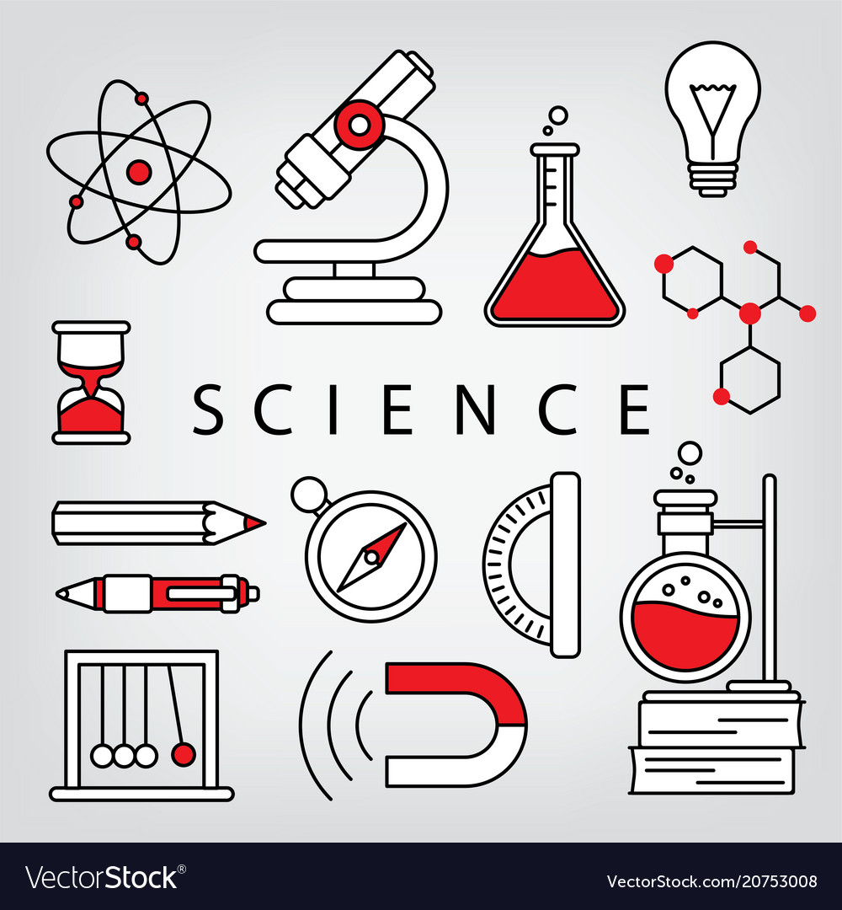

Business
In the literal sense, the term “Business” means the state of being busy. But it is a very wide connotation of business because it covers every human activity. Business is really concerned with the production and exchange of goods and services with the aim of earning money. Business creates utilities by producing and selling goods and services to satisfy human wants. Business is an activity, in which different persons exchange something of value, whether goods or services, for mutual gain or profit.
Education

Education not only develops our academic performance but is also helpful in other curricular activities. We learn to read, write, speak, learn various skills, practice other activities; all are various types of education. You can learn from anyone, an ant can also be your teacher, which teaches us to try until we achieve success. We cannot imagine life without an education.
Sports

Sports are very essential for every human life which keeps them fit and fine and physical strength. It has great importance in each stage of life. It also improves the personality of people. Sports keep our all organs alert and our hearts become stronger by regularly playing some kind of sports. sports has always given priority from old ages and nowadays it has become more fascinating. Due to the physical activity blood pressure also remains healthy, and blood vessels remain clean. Sugar level also reduces and cholesterol comes down by daily activity.
Science
It is a science that sometimes looks like a miracle. Science plays a very important role in our lives. There is science everywhere but we learn about them when we visit our school. There is nothing which science cannot do in our life. If you are alone, you can watch a movie.